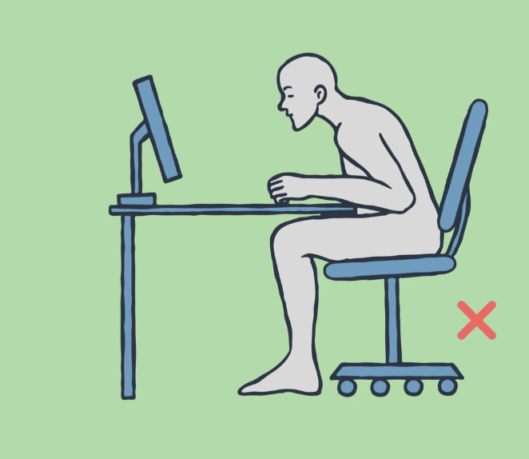
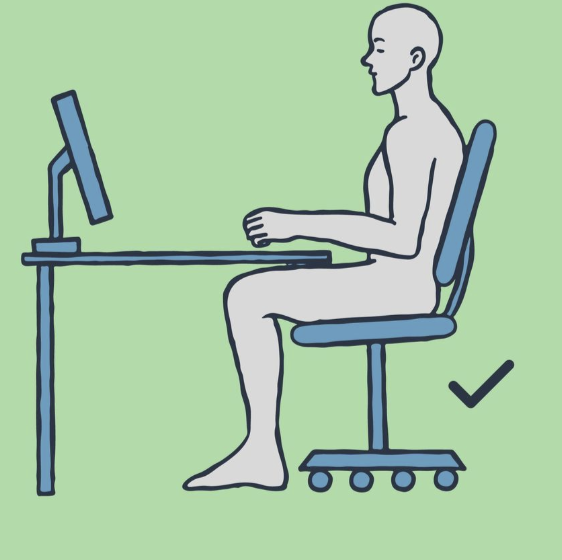

자세 교정 가이드
올바른 목 정렬과 어깨 균형, 상체 중심 유지 방법을 단계별로 확인하세요.
가이드 모드: 학습 안내
자세 교정 이미지 가이드
비율이 유지된 원본 이미지를 기준으로 착석 자세를 확인하세요.

허리가 굽고 머리가 앞으로 쏠리는
잘못된 착석 자세

등받이에 밀착하고 발바닥을 바닥에 고정한
올바른 착석 자세
유튜브 영상 가이드
한국어 자세 교정 스트레칭 영상을 바로 재생할 수 있습니다.
올바른 자세 방법
- 턱을 살짝 당겨 목 정렬 유지
- 어깨를 편안하게 내리고 긴장 완화
- 허리를 곧게 세우고 등받이에 밀착
- 모니터를 눈높이에 맞게 조정
학습 체크리스트
교정 포인트를 체크하며 올바른 자세 습관 형성 여부를 빠르게 점검할 수 있습니다.
준비도 0점
학습 준비도 안내
체크한 항목 수에 따라 현재 자세 준비도를 바로 확인할 수 있습니다.
아직 설정된 리마인더가 없습니다.